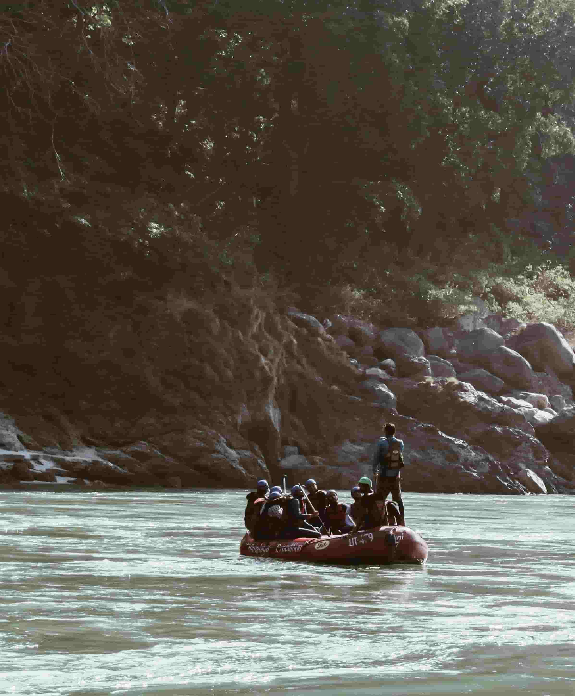

At Banana, our mission is to create safe and memorable river adventures that bring people together. We believe rafting is more than an exciting ride—it is a chance to experience nature, build teamwork, and create lasting memories. Ride the Current. Share the Adventure.